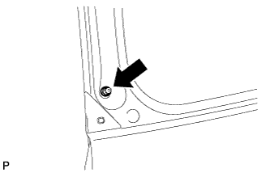

СТОЙКА ЗАДНЕГО ОКНА > СНЯТИЕ |
| 1. СНИМИТЕ ЛЕВУЮ СТОЙКУ ЗАДНЕГО ОКНА В СБОРЕ |
 |
С помощью отвертки снимите 2 стопорных кольца, как показано на рисунке, и снимите стойку заднего стекла.
| *1 | Защитная клейкая лента |
| 2. ВЫВЕРНИТЕ БОЛТ КРОНШТЕЙНА ДВЕРИ БАГАЖНОГО ОТДЕЛЕНИЯ |
|  |
Выверните болт кронштейна двери багажного отделения.